Prithish Shan
Building across biotech and AI to deliver solutions into the hands of end users.
- Education
-
Carnegie Mellon University
B.S. Statistics & Machine Learning + additional major in Computer Science
GPA 3.66/4.00 · Dean's List - Contact
-
prithish.shan@gmail.com
507-271-2799
Jacksonville, FL · Pittsburgh, PA
Scroll to explore the work
MyoVerse
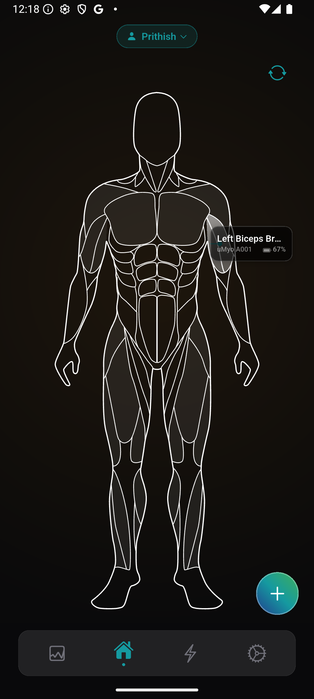
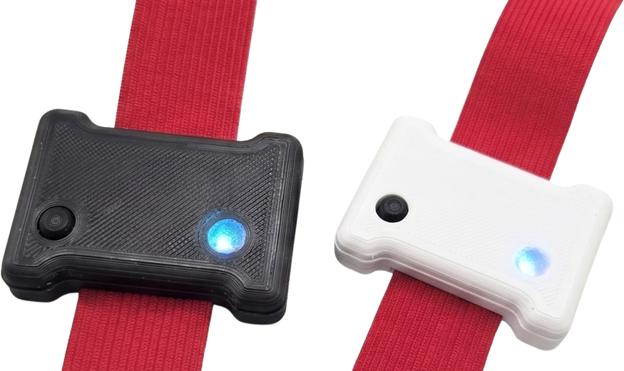
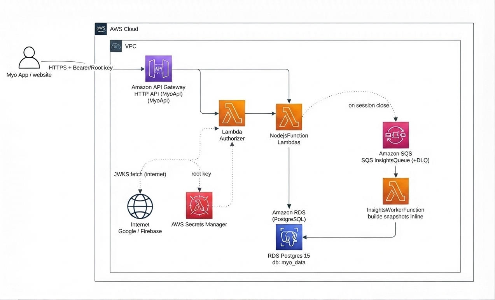
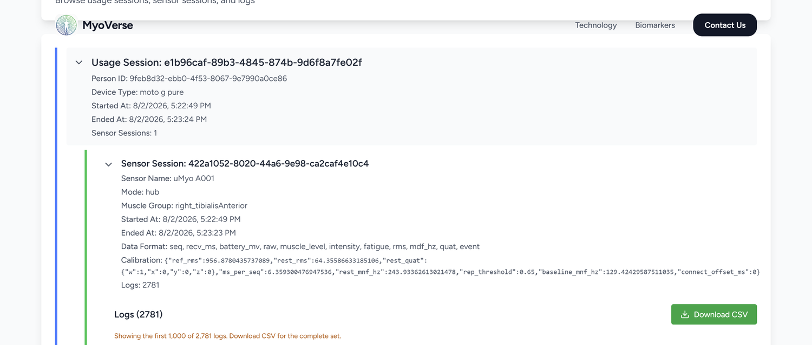
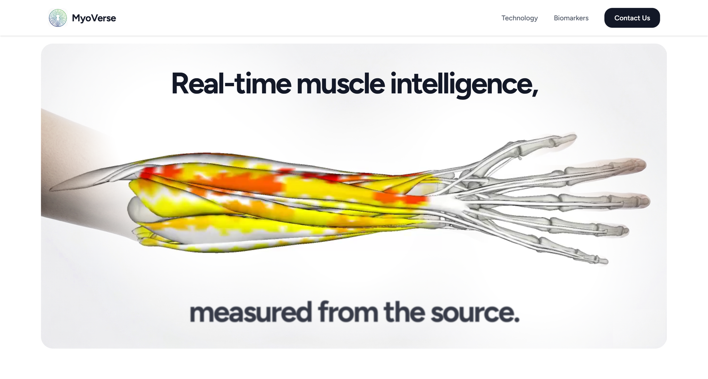
Biomedical AI
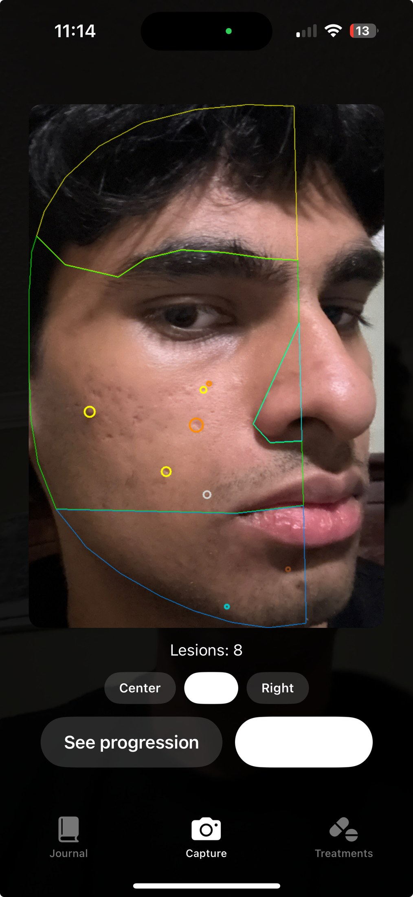
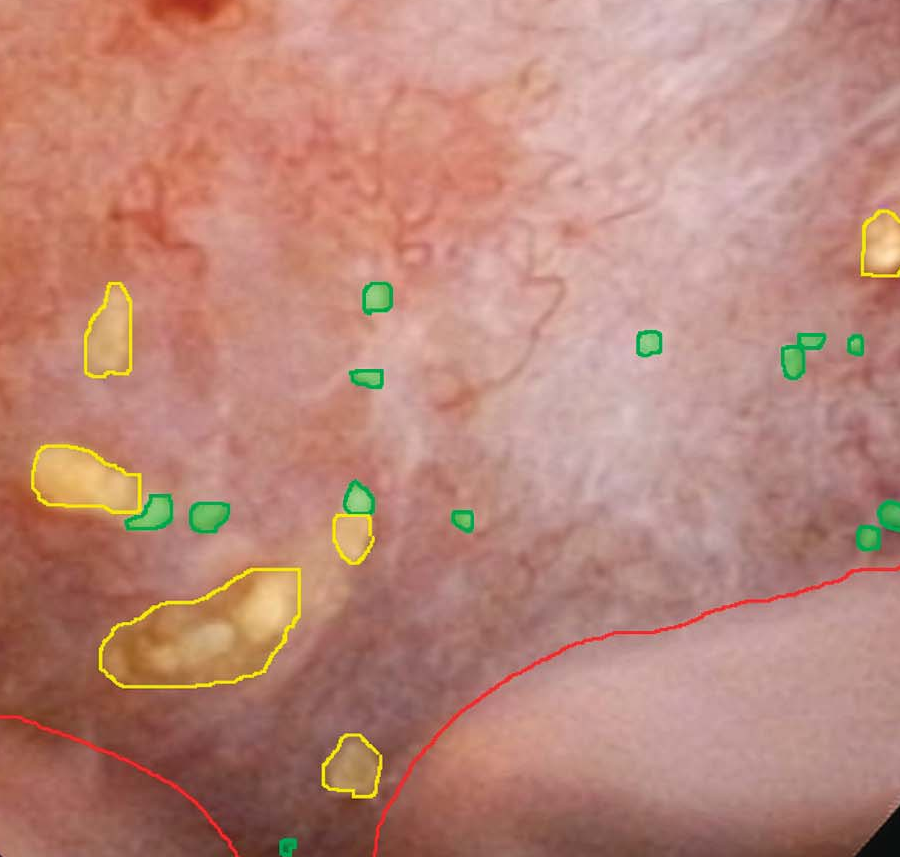
Work in progressAgentic Apps
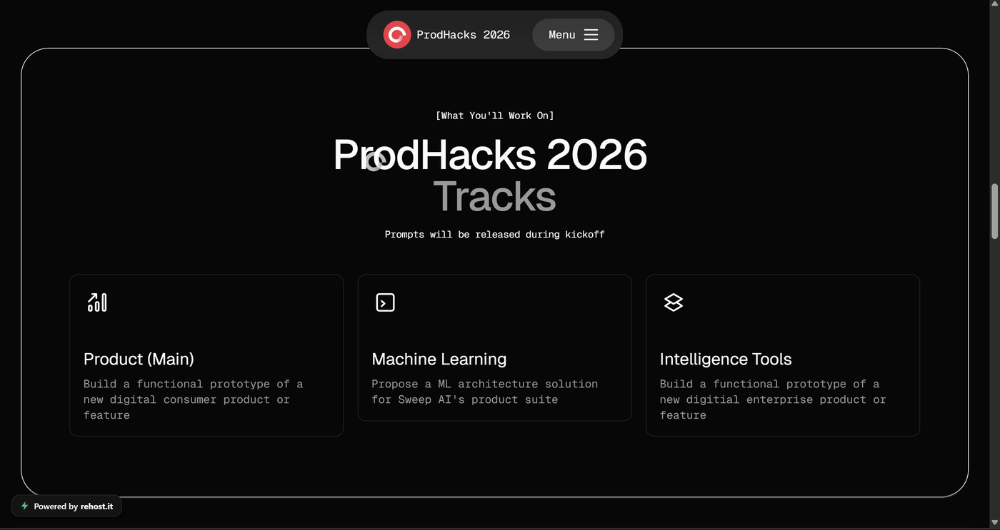
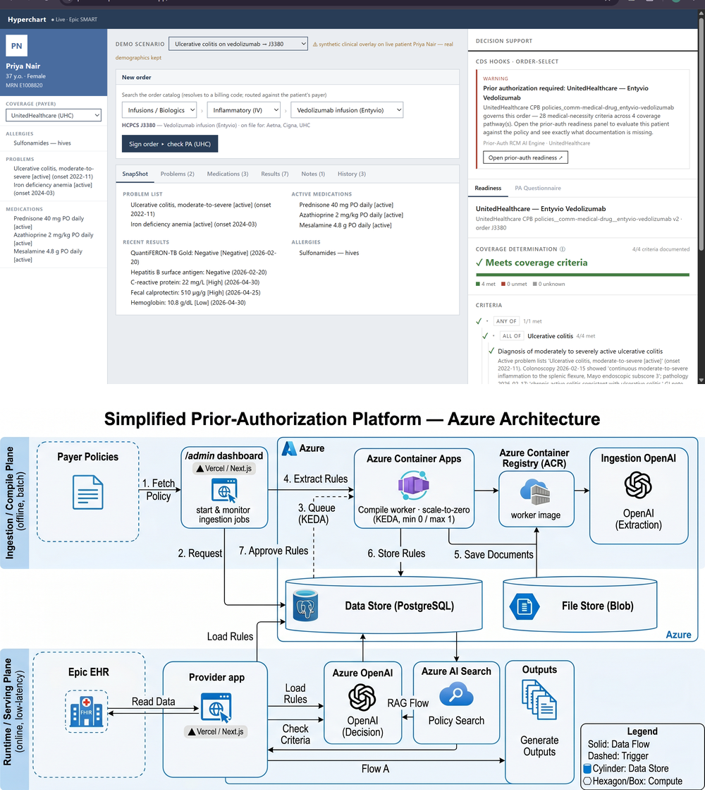
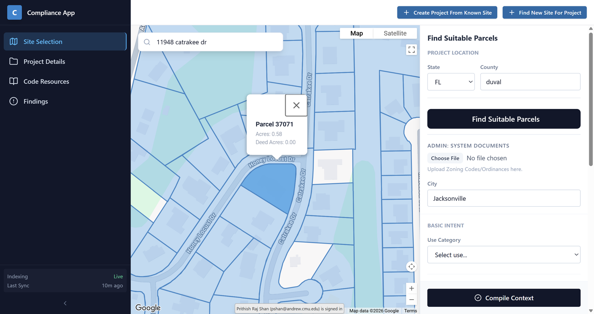
Foundational AI
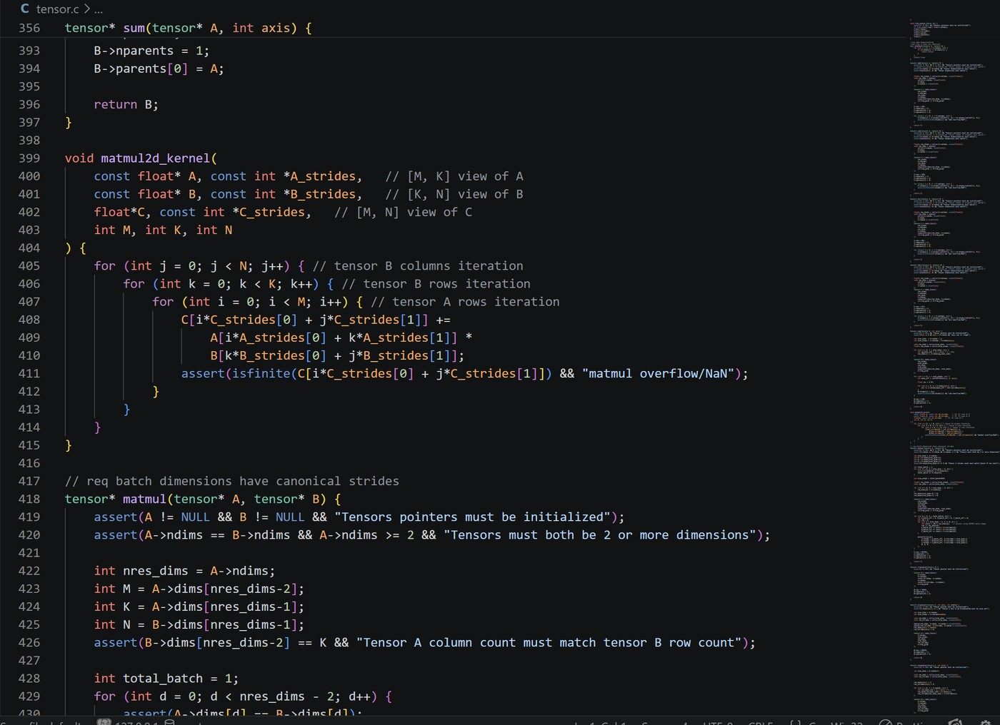
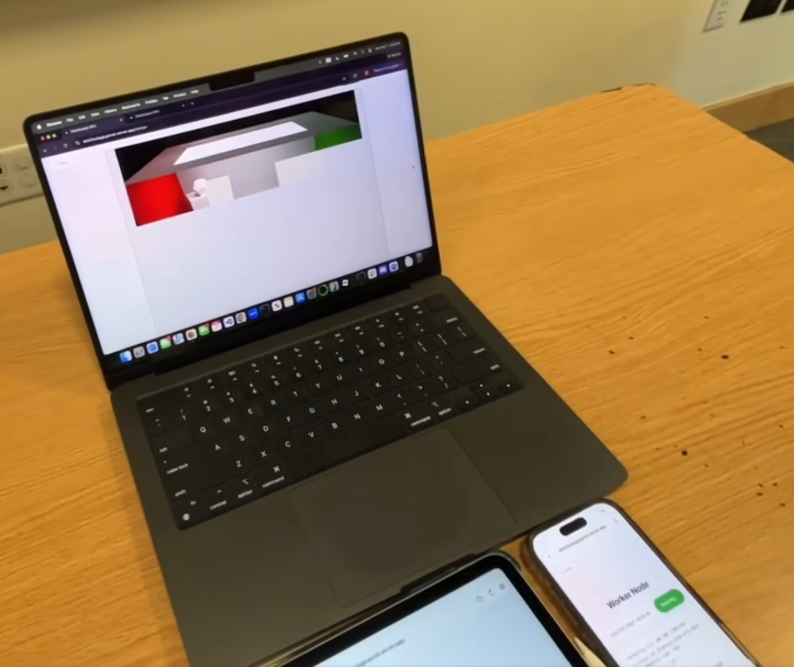
Foundational · 03
Mosaic GPT
Transformer from scratch
Work in progress∇
Foundational · 04
Mosaic CAD
Programmatic geometry kernel
Work in progress∇